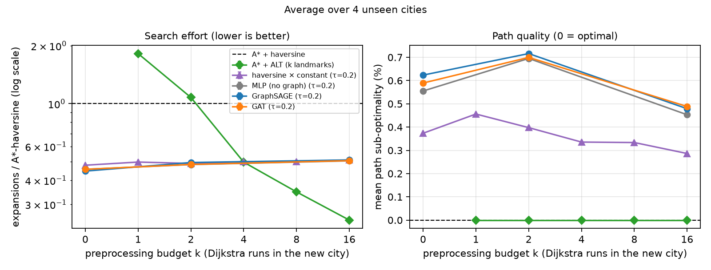
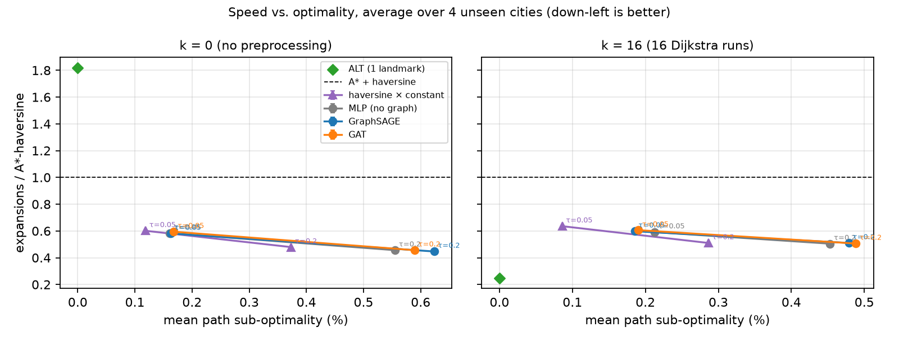

Abstract
Learned heuristics are a popular way to speed up A* search, but they are rarely compared with strong classical methods under equal preprocessing. We train MLP, GraphSAGE and GAT heuristics that predict the road-to-straight-line detour ratio on three Indian cities, and test them on four unseen cities (5k–26k nodes, OpenStreetMap). Every method gets the same budget of k = 0–16 single-source Dijkstra runs in the new city. With no preprocessing, learned heuristics cut node expansions to 0.45× of straight-line A* at 0.6% longer paths. However, a single calibrated detour-ratio constant lies on the same speed–optimality trade-off curve, graph message passing gives no gain over an MLP, and fine-tuning helps only in a city seen during training. The classical ALT algorithm is worse than straight-line A* with 1–2 landmarks, ties the learned models at 4, and dominates from 8 landmarks (0.35×), while always returning optimal paths. We conclude that for city road networks learning adds little beyond calibration, and we explain why: the detour-ratio distribution is nearly the same across cities.
1. Setup
Graphs. Drivable OpenStreetMap networks within 5 km of eight city centres, made undirected and reduced to their largest component. Training: Chandigarh, Ludhiana, Jalandhar. Validation (choice of τ only): Patiala. Test: Chandigarh (seen city, new queries) and four unseen cities, Amritsar (Punjab), Dharwad, Mysuru and Bengaluru (Karnataka, a different region), with 19,117 / 4,958 / 18,557 / 26,386 nodes.
Learned heuristic. For node v and target t, predict r = droad(v,t) / dhaversine(v,t) and use h(v) = dhaversine · r̂. A three-layer encoder (MLP with no message passing, GraphSAGE or GATv2; 55–68k parameters) embeds nodes from city-invariant features. A pair head maps both embeddings plus the straight-line geometry to log r̂ ≥ 0. Exact labels come from 150 single-source Dijkstras per training city. The loss is the pinball loss at quantile τ ∈ {0.05, 0.2}: a lower τ under-predicts more often, which gives fewer sub-optimal paths but more search. τ = 0.2 was selected on Patiala for every method (fewest expansions with ≤ 1% sub-optimality). There are 3 training seeds per configuration.
Equal budget k. ALT uses k farthest-point landmarks (exact). The constant baseline uses the τ-quantile ratio measured on k calibration Dijkstras (k = 0: on the training cities). Learned models are zero-shot at k = 0 and fine-tuned on the k calibration Dijkstras otherwise. Calibration and query targets are disjoint. Each city has 150 queries (straight-line distance ≥ 1 km), identical for all methods, and one shared A* implementation is used throughout.
2. Results
Unseen-city average
k = 0
k = 2
k = 4
k = 8
k = 16
A* + haversine
1.00 (0%)
A* + ALT (k landmarks)
–
1.08 (0%)
0.50 (0%)
0.35 (0%)
0.25 (0%)
haversine × constant
0.48 (0.37%)
0.49 (0.40%)
0.50 (0.34%)
0.50 (0.33%)
0.51 (0.29%)
MLP (no graph)
0.46 (0.56%)
0.48 (0.70%)
–
–
0.50 (0.45%)
GraphSAGE
0.45 (0.62%)
0.49 (0.72%)
–
–
0.51 (0.48%)
GAT
0.46 (0.59%)
0.48 (0.70%)
–
–
0.51 (0.49%)
Table 1. Node expansions relative to A* + haversine (geometric mean over queries, averaged over Amritsar, Dharwad, Mysuru and Bengaluru), with mean path sub-optimality in brackets. Learned: mean of 3 seeds (std ≤ 0.02). ALT with k = 1 gives 1.82; Dijkstra gives 5.53.

Figure 1. Search effort (left, log scale) and path quality (right) as the preprocessing budget grows.

Figure 2. Speed–optimality trade-off over both τ values. The learned models lie on the same curve as the one-number constant baseline.
3. Findings
Over-estimating heuristics halve the search for very little loss. Zero-shot learned models reach 0.45–0.46× expansions at 0.56–0.62% sub-optimality.
A constant does as well. haversine × 1.17 (the 20th-percentile detour ratio on the training cities) gives 0.48× at 0.37%. At matched quality (τ = 0.05) the constant gives 0.60× at 0.12% and GraphSAGE 0.58× at 0.16%. The 20th-percentile detour ratio is 1.14–1.18 in every test city, so there is little city-specific signal for a model to exploit.
Message passing did not help. GraphSAGE and GAT were within 0.01 of the MLP in every unseen city, inside seed noise.
Fine-tuning helps only in-distribution. In Chandigarh (seen in training), fine-tuning on 16 Dijkstras lowers learned models to 0.41–0.45× against 0.56× for the constant at similar sub-optimality (about 0.8%). In unseen cities it moved models along the trade-off instead of improving them (GraphSAGE 0.45× → 0.51× while sub-optimality fell 0.62% → 0.48%).
ALT needs a few landmarks, then wins on every metric. With 1–2 landmarks it is worse than haversine (1.82×, 1.08×). It ties at 4 (0.50×) and wins at 8–16 (0.35×, 0.25×) with optimal paths and at most 0.1 s of preprocessing per city.
4. Limitations
City cores of 5k–26k nodes. At country scale, ALT's memory (k distances per node) grows and the balance may shift.
Wall-clock time in pure Python: 24 ms per query for haversine, 21 ms for GraphSAGE (9 ms of which is the model's per-target forward pass), 14 ms for the constant and 10 ms for ALT-16.
Distances only (no travel time); one-way streets ignored; two τ values and one model size tried.
References
A. V. Goldberg, C. Harrelson. Computing the Shortest Path: A* Search Meets Graph Theory. SODA 2005.
W. Hamilton, R. Ying, J. Leskovec. Inductive Representation Learning on Large Graphs. NeurIPS 2017.
S. Brody, U. Alon, E. Yahav. How Attentive are Graph Attention Networks? ICLR 2022.
G. Boeing. OSMnx: New Methods for Acquiring, Constructing, Analyzing, and Visualizing Complex Street Networks. 2017.
P. Hart, N. Nilsson, B. Raphael. A Formal Basis for the Heuristic Determination of Minimum Cost Paths. 1968.